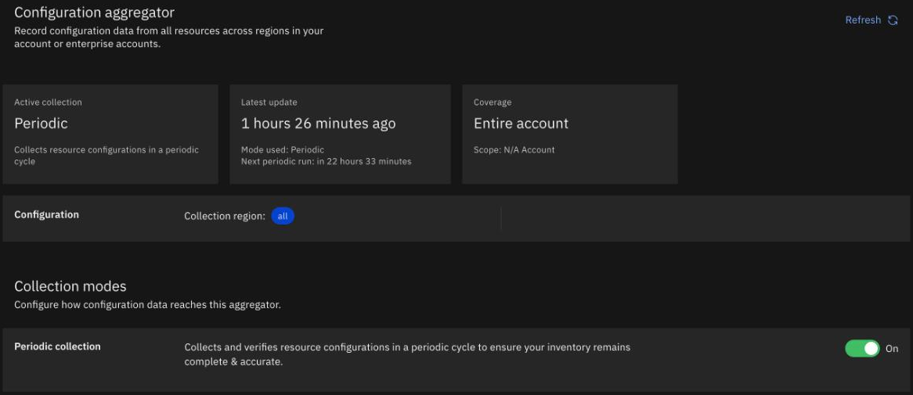
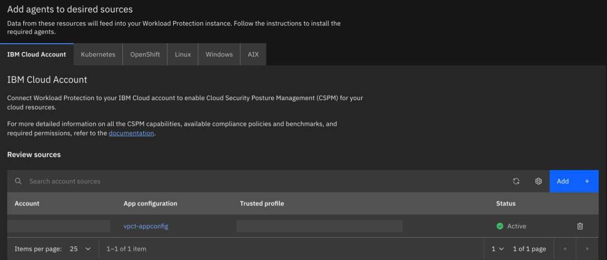
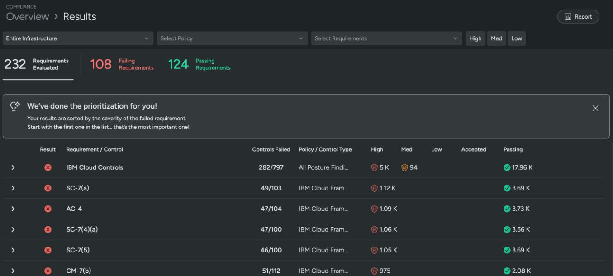

Watch the estate
By the end you can say which of five tools answers which question about the estate, read a flow log and an audit event, and spot why a tool shows nothing.
Northgate Freight is a made-up haulier moving its vSphere estate to IBM Cloud VPC. Its security team asks who changed a rule, what was blocked, and what the estate fails. The commands, output and screenshots below are real, from a test account.
Every command, output and screenshot in this unit comes from tutorial chapters 62 to 66, apart from the review question, which comes from chapter 61.
Five ways to look
Each tool answers one kind of question. Select a part of the drawing to see what it records and which command sets it up. You can also click a line.
Flow logs
A collector watches a VPC, a subnet, a server or an interface. It writes a summary of each connection to an Object Storage bucket, about every 5 minutes. The bucket must be a single-region bucket in the region of the target.
Watch for this. A collector on a cross-region bucket is accepted and shows stable and active, and writes nothing. Flow logs collect TCP and UDP, not ICMP.
Activity Tracker
An audit event records that a user or service did something to a resource. A route sends the events to a target, here a bucket.
Watch for this. The lab account is shared. A route for us-east sends the events of every team's resources there. Read only your own.
Monitoring
IBM Cloud Monitoring holds the metrics. An agent on the server collects host CPU, memory, storage, process and network metrics and sends them to a collector endpoint on port 6443.
Watch for this. IBM adds a setting, monitor_light, for a Linux server that is not orchestrated. With it the agent connected and then lost the connection every three minutes, and no metrics arrived in seven minutes. Chapter 64 does not use it.
Cloud Logs
IBM Cloud Logs stores, searches and alerts on logs. A logging agent reads log files and sends them. Each line carries an application name and a subsystem name.
Watch for this. The agent's default input is /var/log/**/*.log. That matches files in subdirectories of /var/log only. A file such as /var/log/syslog does not match.
Compliance scan
Security and Compliance Center Workload Protection scans the account's resources against compliance policies. It reads a copy of the resource settings that App Configuration holds. The scan needs no agent on a server.
Watch for this. The scan reads every team's resources in a shared account. After a fix the results change only after the next daily collection.
ibmcloud is flow-log-create --bucket vpct-flowlogs-nrt29b --target vpct-prod --target-type vpc \
--name vpct-prod-flow-log --active true --resource-group-name vpct-lab
ibmcloud atracker route create --name vpct-audit-route --target-ids $TARGET_ID --locations us-east
ibmcloud resource service-instance-create vpct-monitoring sysdig-monitor lite us-east -g vpct-lab \
--tags "project:vpc-tutorials,owner:<your-user-name>,series:6,chapter:64" -p '{"default_receiver": false}'
ibmcloud resource service-instance-create vpct-logs logs standard us-east -g vpct-lab \
--tags "project:vpc-tutorials,owner:<your-user-name>,series:6,chapter:65"
ibmcloud resource service-instance-create vpct-scc sysdig-secure free-trial us-east -g vpct-lab \
--tags "project:vpc-tutorials,owner:<your-user-name>,series:6,chapter:66"
What was blocked, and why is the bucket empty?
A web server tried port 9090 on the app server, and port 22 for comparison. Then the flow log object for the app server's interface was read.
$ gunzip -c flow.gz | jq -c ".flow_logs[] | {start_time, action, direction, initiator_ip, target_ip, target_port, transport_protocol}"
{"start_time":"2026-10-30T18:53:40Z","action":"accepted","direction":"I","initiator_ip":"10.20.0.25","target_ip":"10.20.1.28","target_port":22,"transport_protocol":6}
{"start_time":"2026-10-30T16:33:45Z","action":"rejected","direction":"I","initiator_ip":"10.20.0.25","target_ip":"10.20.1.28","target_port":9090,"transport_protocol":6}
{"start_time":"2026-10-30T18:53:01Z","action":"accepted","direction":"I","initiator_ip":"10.20.1.1","target_ip":"255.255.255.255","target_port":68,"transport_protocol":17}
{"start_time":"2026-10-30T16:33:42Z","action":"rejected","direction":"I","initiator_ip":"10.20.0.25","target_ip":"10.20.1.28","target_port":9090,"transport_protocol":6}
{"start_time":"2026-10-30T16:33:48Z","action":"rejected","direction":"I","initiator_ip":"10.20.0.25","target_ip":"10.20.1.28","target_port":9090,"transport_protocol":6}
Which records show blocked connections?
Show the answer
Each flow has an action of accepted or rejected. The port 22 connection is in the same object, accepted. The three rejected flows are the port 9090 attempts, from the bastion's address to the app server.
Which control rejected the port 9090 connection: the security group or the network ACL?
Show the answer
IBM says a security group or a network ACL can cause a rejection, and the flow log does not say which. Compare the rules of vpct-prod-app-sg and of the app subnet's ACL with port 9090.
Later, a rule from chapter 61 that allows only the VPC was enforced on the bucket's Object Storage instance, and the flow log collector stayed active. The object list, newest last:
$ ibmcloud cbr rule-create --description "vpct-cos-vpc-only" ... (19:05:25 UTC, enforced) $ ibmcloud cbr rule-delete $RULE (19:13:20 UTC) $ ibmcloud cos objects ... | sort | tail -6 (19:20 UTC) 2026-10-30T19:04:36.878Z 0757-02ba3a88 3966 2026-10-30T19:04:36.883Z 0757-02ba3a88 1130 2026-10-30T19:18:14.192Z 0757-831b0467 809 2026-10-30T19:18:14.238Z 0757-831b0467 745 2026-10-30T19:19:36.738Z 0757-02ba3a88 988 2026-10-30T19:19:36.876Z 0757-02ba3a88 4078
No objects appear between 19:05 and 19:13, and the collector shows active. What is the cause?
Show the answer
A rule that allows only the VPC stops the collector writing. No objects appeared while the rule was enforced, and writing resumed within about five minutes of deleting it. To keep the rule and the collector, add a zone for the VPC Infrastructure Services (is) as a second context of the rule. After that the count of objects grew again, and the laptop was still denied.
Find who changed a rule, and find a log line
An audit route sends events to a bucket. A logging agent sends files to Cloud Logs. Run each command in turn. The output is what the test account returned.
# create a security group; each action is an audit event
ibmcloud is security-group-create vpct-prod-audit-test-sg vpct-prod --resource-group-name vpct-lab
Creating security group vpct-prod-audit-test-sg in resource group vpct-lab
ID r014-16ac…a821
Name vpct-prod-audit-test-sg
Created 2026-10-30T22:33:35+00:00
VPC ID Name
r014-6c88…1fbb vpct-prod
Some lines of the full output are left out.
ibmcloud is security-group-delete vpct-prod-audit-test-sg --vpc vpct-prod -f
OK Security group vpct-prod-audit-test-sg is deleted.
About three minutes later the events are in the bucket. You search them for this group's name. You expect a create and a delete. Is there anything else?
Show the answer
The platform read the group between your two commands. Run the query to see it.
jq -c ".line | fromjson | select(.target.name == \"vpct-prod-audit-test-sg\") | {action, outcome, initiator: .initiator.name, eventTime}" events.json
{"action":"is.security-group.security-group.create","outcome":"success","initiator":"<your-email>","eventTime":"2026-10-30T22:33:35.95+0000"}
{"action":"is.security-group.security-group.read","outcome":"success","initiator":"ServiceId-<id>","eventTime":"2026-10-30T22:33:39.93+0000"}
{"action":"is.security-group.security-group.delete","outcome":"success","initiator":"<your-email>","eventTime":"2026-10-30T22:33:44.84+0000"}
Create and delete name your user. The read names a service ID.
Three minutes. IBM says a route can take up to an hour. The same object held 47 events from other teams.
The logging agent's default input is /var/log/**/*.log. You write one test line to a file. Which file does the agent send?
Show the answer
The pattern matches files in subdirectories of /var/log only. A file such as /var/log/syslog does not match.
# on the server
sudo mkdir -p /var/log/vpct && echo "vpct chapter 65 test line $(date -u +%FT%TZ)" | sudo tee -a /var/log/vpct/test.log
vpct chapter 65 test line 2026-10-31T08:14:01Z
# 34 seconds later, from a laptop
ibmcloud logs query --query "source logs | filter \$d.applicationName == 'vpct-prod'" --since 30m --output json
timestamp: 2026-10-31T08:14:04.486177758
user_data: {"applicationName":"vpct-prod","file":"/var/log/vpct/test.log","log":"vpct chapter 65 test line 2026-10-31T08:14:01Z","meta":{"hostname":"vpct-prod-client-z1-01"},"subsystemName":"app","tag":"host.var.log.vpct.test.log"}
In the instance 3 seconds after it was written. The query found it 34 seconds later.
Scan the account for compliance
These are real screens from chapter 66. Click where you would click. After two misses the right place is marked.

Northgate wants the account's settings collected so they can be scanned. Which control keeps collection running?
Show where
Right. The Periodic collection switch. Saving the aggregation creates a trusted profile with read access to all IAM-enabled and account-management services, so only do this in an account where you may. The collection runs once a day.

Workload Protection must read that copy. Which button adds the account as a source?
Show where
Right. Add, on the IBM Cloud Account tab. You choose Use existing and enter the trusted profile and the App Configuration instance. The status shows Configuring and later Active. It can stay on Configuring for a long time, so check the dashboard's Integrations page too.

The first scan has run. Which number is the count of requirements that fail?
Show where
Right. 108 of the 232 requirements fail, and 124 pass. The list holds every team's resources in the account, so look for names that start with your own prefix and fix only those.
Four questions
Review question from Unit 5.3. You enforce a rule on a Key Protect instance. Minutes later a request from outside the VPC still sometimes succeeds. Is the rule broken?
Show the answer
During that time the same request sometimes succeeds and sometimes fails. Wait until it fails every time before you trust a denial.
One server pings another, and a security group blocks the ping. Does the block appear in the flow log?
Show the answer
IBM says flow logs collect TCP and UDP traffic, not ICMP. A ping is ICMP.
The monitoring agent runs with monitor_light set. It connects, but no metrics arrive. What did chapter 64 find?
Show the answer
IBM adds the setting for a Linux server that is not orchestrated. On the lab server it broke metrics, so the chapter leaves it out.
You fix a failed control. An hour later the results still show it failing. What do you do?
Show the answer
The aggregator collects once a day, and Workload Protection reads what it collected. The page shows the time of the next run. Switching collection off and on does not start a run.
You can watch the estate
Flow logs show connections, not which control blocked them. Audit events name who. Agents need a route and the right file. Results change after the next collection.
Tutorial chapters 62 to 66 build each one: Capturing VPC flow logs and finding a blocked connection, Finding who changed a resource with Activity Tracker events, Monitoring VPC servers with IBM Cloud Monitoring, Collecting server logs with the IBM Cloud Logs agent and Scanning the estate with Security and Compliance Center.